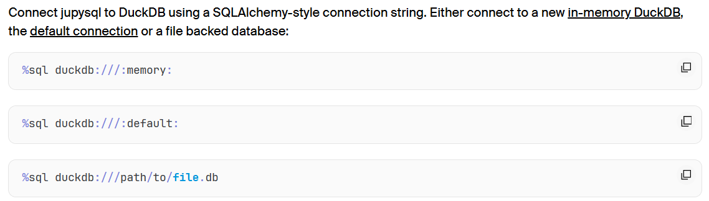
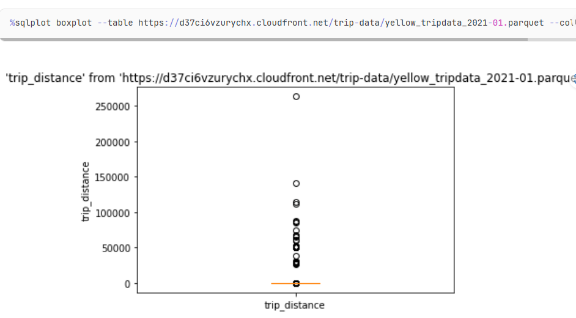

Code
Deploy Panel apps for free on Ploomber Cloud! Learn more: https://ploomber.io/s/signupThe sql extension is already loaded. To reload it, use:
%reload_ext sql
| schema_name | function_name |
|---|---|
| pg_catalog | shobj_description |
| pg_catalog | shobj_description |
| pg_catalog | shobj_description |
| pg_catalog | pg_typeof |
| pg_catalog | pg_typeof |
クエリの結果をPythonオブジェクトとして取得する。
| species | island | bill_length_mm | bill_depth_mm | flipper_length_mm | body_mass_g | sex | |
|---|---|---|---|---|---|---|---|
| 0 | Adelie | Torgersen | 39.1 | 18.7 | 181.0 | 3750.0 | Male |
| 1 | Adelie | Torgersen | 39.5 | 17.4 | 186.0 | 3800.0 | Female |
| 2 | Adelie | Torgersen | 40.3 | 18.0 | 195.0 | 3250.0 | Female |
| 3 | Adelie | Torgersen | NaN | NaN | NaN | NaN | NaN |
| 4 | Adelie | Torgersen | 36.7 | 19.3 | 193.0 | 3450.0 | Female |
| ... | ... | ... | ... | ... | ... | ... | ... |
| 339 | Gentoo | Biscoe | NaN | NaN | NaN | NaN | NaN |
| 340 | Gentoo | Biscoe | 46.8 | 14.3 | 215.0 | 4850.0 | Female |
| 341 | Gentoo | Biscoe | 50.4 | 15.7 | 222.0 | 5750.0 | Male |
| 342 | Gentoo | Biscoe | 45.2 | 14.8 | 212.0 | 5200.0 | Female |
| 343 | Gentoo | Biscoe | 49.9 | 16.1 | 213.0 | 5400.0 | Male |
344 rows × 7 columns
| species | sex | sum(bill_length_mm) |
|---|---|---|
| Gentoo | None | 182.5 |
| Chinstrap | Female | 1583.5 |
| Adelie | Female | 2719.7999999999993 |
| Gentoo | Male | 3017.9000000000005 |
| Chinstrap | Male | 1737.2 |
| Adelie | Male | 2948.4999999999973 |
| Gentoo | Female | 2642.7 |
| Adelie | None | 189.2 |
| species | island | bill_length_mm | bill_depth_mm | flipper_length_mm | body_mass_g | sex |
|---|---|---|---|---|---|---|
| Adelie | Torgersen | 39.1 | 18.7 | 181.0 | 3750.0 | Male |
| Adelie | Torgersen | 39.5 | 17.4 | 186.0 | 3800.0 | Female |
| Adelie | Torgersen | 40.3 | 18.0 | 195.0 | 3250.0 | Female |
| Adelie | Torgersen | None | None | None | None | None |
| Adelie | Torgersen | 36.7 | 19.3 | 193.0 | 3450.0 | Female |
| Adelie | Torgersen | 39.3 | 20.6 | 190.0 | 3650.0 | Male |
| Adelie | Torgersen | 38.9 | 17.8 | 181.0 | 3625.0 | Female |
| Adelie | Torgersen | 39.2 | 19.6 | 195.0 | 4675.0 | Male |
| Adelie | Torgersen | 34.1 | 18.1 | 193.0 | 3475.0 | None |
| Adelie | Torgersen | 42.0 | 20.2 | 190.0 | 4250.0 | None |
%%sql
SELECT
COALESCE(species, 'ALL') as species
, COALESCE(sex, 'ALL') as sex
, SUM(bill_length_mm) as sum_bill_legth_mm
, COUNT(*) as total
, COUNT(bill_length_mm) as cnt_bill_length_mm
, AVG(bill_length_mm) as avg_bill_length_mm
, sum_bill_legth_mm / total
, sum_bill_legth_mm / cnt_bill_length_mm
FROM (
SELECT
COALESCE(species, 'NA') as species
, COALESCE(sex, 'NA') as sex
, bill_length_mm
FROM read_csv('penguins.csv')
)
GROUP BY ROLLUP(species, sex)
ORDER BY species, sex| species | sex | sum_bill_legth_mm | total | cnt_bill_length_mm | avg_bill_length_mm | (sum_bill_legth_mm / total) | (sum_bill_legth_mm / cnt_bill_length_mm) |
|---|---|---|---|---|---|---|---|
| ALL | ALL | 15021.300000000005 | 344 | 342 | 43.92192982456142 | 43.66656976744187 | 43.92192982456142 |
| Adelie | ALL | 5857.500000000003 | 152 | 151 | 38.79139072847684 | 38.536184210526336 | 38.79139072847684 |
| Adelie | Female | 2719.7999999999993 | 73 | 73 | 37.25753424657533 | 37.25753424657533 | 37.25753424657533 |
| Adelie | Male | 2948.4999999999973 | 73 | 73 | 40.39041095890407 | 40.39041095890407 | 40.39041095890407 |
| Adelie | NA | 189.2 | 6 | 5 | 37.839999999999996 | 31.53333333333333 | 37.839999999999996 |
| Chinstrap | ALL | 3320.7000000000003 | 68 | 68 | 48.83382352941177 | 48.83382352941177 | 48.83382352941177 |
| Chinstrap | Female | 1583.5 | 34 | 34 | 46.5735294117647 | 46.5735294117647 | 46.5735294117647 |
| Chinstrap | Male | 1737.2 | 34 | 34 | 51.09411764705882 | 51.09411764705882 | 51.09411764705882 |
| Gentoo | ALL | 5843.0999999999985 | 124 | 123 | 47.504878048780476 | 47.121774193548376 | 47.504878048780476 |
| Gentoo | Female | 2642.7 | 58 | 58 | 45.563793103448276 | 45.563793103448276 | 45.563793103448276 |

duckdbはストアドプロージャがない。一方で、Pythonで関数を定義することができる。
以下は、その例である。
[('Justin Barnes',)]┌─────────────┐
│ my_func(42) │
│ varchar │
├─────────────┤
│ 42 │
└─────────────┘import duckdb
from duckdb.typing import *
def dont_intercept_null(x):
return 5
duckdb.create_function("dont_intercept", dont_intercept_null, [BIGINT], BIGINT)
res = duckdb.sql("SELECT dont_intercept(NULL)").fetchall()
print(res)
# [(None,)]
duckdb.remove_function("dont_intercept")
duckdb.create_function("dont_intercept", dont_intercept_null, [BIGINT], BIGINT, null_handling="special")
res = duckdb.sql("SELECT dont_intercept(NULL)").fetchall()
print(res)
# [(5,)][(None,)]
[(5,)]import duckdb
from duckdb.typing import *
def will_throw():
raise ValueError("ERROR")
duckdb.create_function("throws", will_throw, [], BIGINT)
try:
res = duckdb.sql("SELECT throws()").fetchall()
except duckdb.InvalidInputException as e:
print(e)
duckdb.create_function("doesnt_throw", will_throw, [], BIGINT, exception_handling="return_null")
res = duckdb.sql("SELECT doesnt_throw()").fetchall()
print(res)
# [(None,)]Invalid Input Error: Python exception occurred while executing the UDF: ValueError: ERROR
At:
C:\Users\suzuk\AppData\Local\Temp\ipykernel_2440\2917477593.py(5): will_throw
C:\Users\suzuk\AppData\Local\Temp\ipykernel_2440\2917477593.py(9): <module>
c:\pyenv\py312\Lib\site-packages\IPython\core\interactiveshell.py(3526): run_code
c:\pyenv\py312\Lib\site-packages\IPython\core\interactiveshell.py(3466): run_ast_nodes
c:\pyenv\py312\Lib\site-packages\IPython\core\interactiveshell.py(3284): run_cell_async
c:\pyenv\py312\Lib\site-packages\IPython\core\async_helpers.py(129): _pseudo_sync_runner
c:\pyenv\py312\Lib\site-packages\IPython\core\interactiveshell.py(3079): _run_cell
c:\pyenv\py312\Lib\site-packages\IPython\core\interactiveshell.py(3024): run_cell
c:\pyenv\py312\Lib\site-packages\ipykernel\zmqshell.py(546): run_cell
c:\pyenv\py312\Lib\site-packages\ipykernel\ipkernel.py(422): do_execute
c:\pyenv\py312\Lib\site-packages\ipykernel\kernelbase.py(740): execute_request
c:\pyenv\py312\Lib\site-packages\ipykernel\kernelbase.py(412): dispatch_shell
c:\pyenv\py312\Lib\site-packages\ipykernel\kernelbase.py(505): process_one
c:\pyenv\py312\Lib\site-packages\ipykernel\kernelbase.py(516): dispatch_queue
C:\Program Files\Python312\Lib\asyncio\events.py(84): _run
C:\Program Files\Python312\Lib\asyncio\base_events.py(1951): _run_once
C:\Program Files\Python312\Lib\asyncio\base_events.py(618): run_forever
c:\pyenv\py312\Lib\site-packages\tornado\platform\asyncio.py(195): start
c:\pyenv\py312\Lib\site-packages\ipykernel\kernelapp.py(736): start
c:\pyenv\py312\Lib\site-packages\traitlets\config\application.py(1053): launch_instance
c:\pyenv\py312\Lib\site-packages\ipykernel_launcher.py(17): <module>
<frozen runpy>(88): _run_code
<frozen runpy>(198): _run_module_as_main
[(None,)]グローバルのcountが使われているのがわかる。
[(0,), (0,), (0,), (0,), (0,), (0,), (0,), (0,), (0,), (0,)]